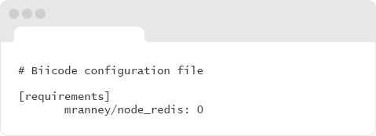

A new multi-language approach to dependency management
Node JS Features
Biicode approach
Biicode is a different approach to dependencies management for C/C++, and we have implemented experimental support for Node.js. We don’t pretend to compete with NPM, it’s well established and has tons of modules. But we think that a unified dependency manager for all languages could be great, please check the approach both for C/C++ and Node and we’d love to hear your feedback.
Deps manager at a file level
- Integrate source code from biicode just by writing appropriate “requires”, (yours and others).
- Manage dependencies at file level. Reuse individual files from existing projects.
- Share and publish to biicode with one command.
- Mix languages, specific OS-code, and reuse later without problems.
Improved conflict resolution
Biicode does not avoid conflicts by managing different versions of the same code in your dependencies, it follows a more traditional and multi-language approach, stores a single dependencies copy in a folder, and the user can specify conflicts resolution. But managing at file level can make this much less necessary. Also, use the smart dependencies resolver to look for a combination of versions of your dependencies that minimizes the chances of conflicts.

A multi-language dependency manager
Use the exact same process and commands to develop, depend, publish and share and reuse source code, independently of the programming language and OS.